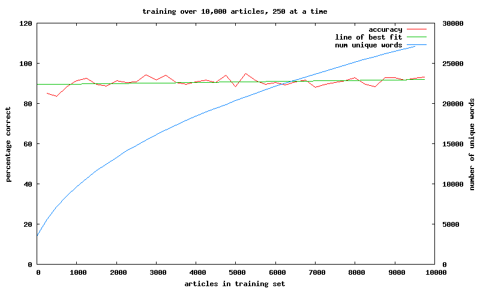
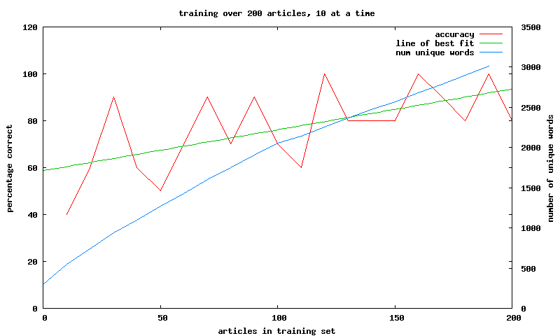
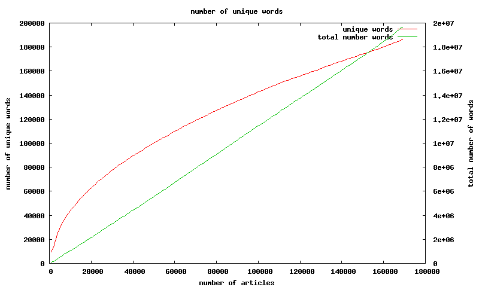
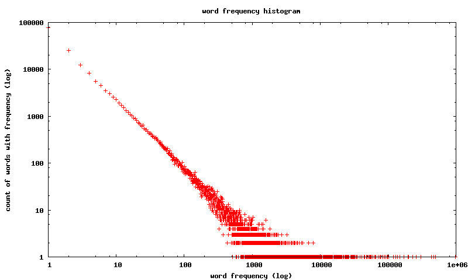

when making a decision on whether to read an article or not what do we have to work with? not much except for the actual words of the article
when looking at articles from theregister i expect to see words like microsoft or linux the words in these articles can be considered "words i like"
when looking at articles from perezhilton i expect to see words like hollywood or gossip the words in these articles can be considered "words i don't like"
as such an article can be classified based on whether it has more words in common with the "words i like" or the "words i don't like"
this introduces the ideas of training we can train the classifier about articles i like by feeding it a bunch of articles from the register likewise we can train the classifier about articles i don't like by feeding it a bunch of articles from perezhilton
this also introduces the idea of testing once a classifer is trained it can be tested by giving it other articles outside of the training set it get's it right if if it says i'd like each one from theregister and says i wouldnt like each one from perezhilton
(in actual fact it's a bit fuzzier than just youd-like-theregister-but-hate-perezhilton there's no guarantee i wouldnt want to read any article from perezhilton perhaps one day they'll have an article on some celebrities high tech house i would actually like to read such an article might use words usually only usually seen in theregister the classifier might, quite correctly, recommend i read it, even though it's in the feed i don't like)
so let's take 9,800 articles (5,000 from perezhilton and 4,800 from theregister) and split them into sets of 250 we'll by see how varying the number of articles in the training set changes the prediction accuracy. we'll train with first set (articles 1-250) and test against the second set (articles 251-500) and see what percentage we get correct then train with the first two sets (articles 1-500) and test against the third set (articles 501-750) and see what percentage we get correct then train with the first three sets (articles 1-750) and test against the third set (articles 751-1000) and see what percentage we get correct and so on
here's a graph of the success rate vs number of articles used in the training (including the number of unique words)  things i think are interesting...
even considering a much smaller training set, say we only consider the first 200 and do the training / testing in blocks of 10 we get good results quickly 
i was surprised about the number of unique words not even remotely asymptoting consider the stead increase in number of unique words across the rss corpus i've collected
(170,000 articles from 60 rss feeds; 20,000,000 words, 186,000 of which are unique) 
we see why the is constant growth when considering the histogram of words vs their frequency  points on this graph denote the number of words that occur for a particular frequency eg the point in the top left, (1,76213), denotes that there are 76,213 words that occur only once in the entire corpus the final point in the bottom right, (987366,1) denotes there is one word that appears 987,366 times
here's the code, including ruby source and gnuplot scripts and here's a small dataset or articles
instead of just word occurences we could try using a more complex form of word occurence analysis, the naive bayes method
july12 2008